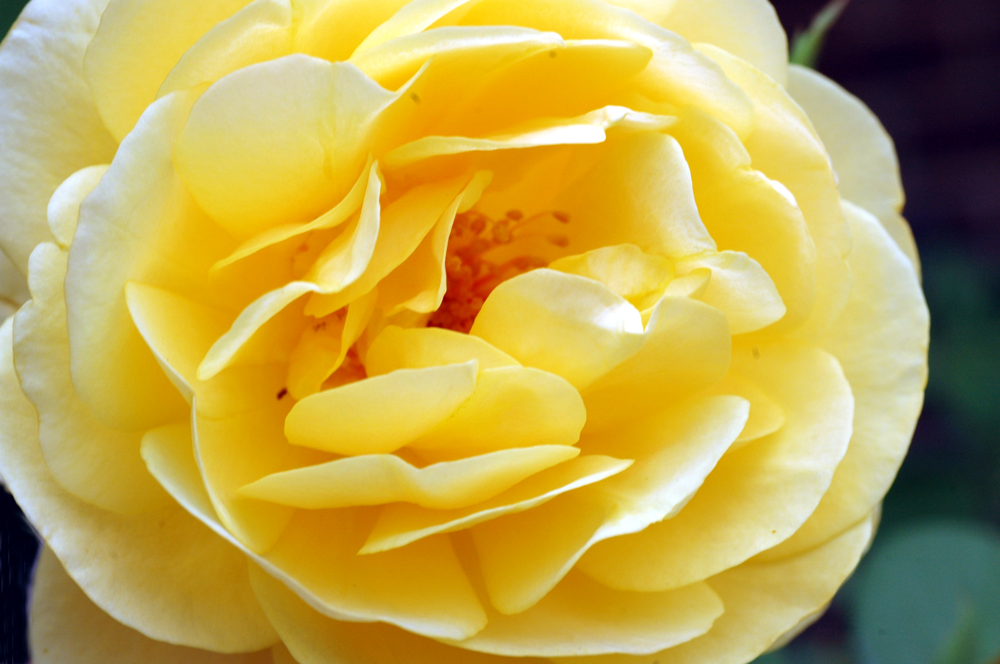

Photography
I have enjoyed photography since I was a kid. My first photo was of a sailboat on a lake
at camp one summer when I was about eight years old.
I took photography in eighth grade and became the photographer for the school paper (grades 8-10).
This included developing those photos in the darkroom.
After college, I took continuing ed courses at IUPUI and gained a certificate in
photography, which also included work in the darkroom.
Later, I built a darkroom in my bathroom. A friend of mine, from a local photographer's group, and I, developed a
photo that won "best of show" in the Indiana State Fair. My own color photo was hung
in that show. Just to have your work hung was an honor as not many made it that far.
Although my darkroom is no more, I still enjoy photography. My favorite subjects include
mostly nature shots.
The carousel below shows all flowers, but I like other nature shots, as well.
Mostly natural formations such as the sky, clouds, and landscapes.
I also love architecture. The clean lines and how they interact with a structure's surroundings, can be
a beautiful thing.

